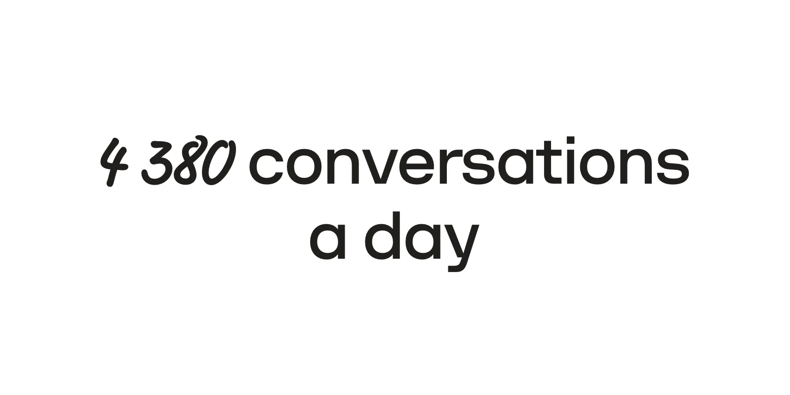
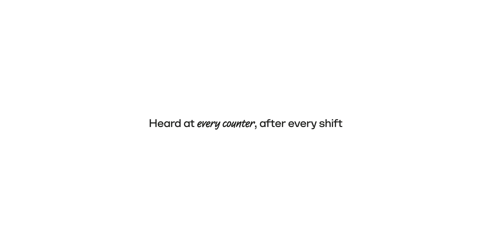

The marker
- Typeface: Supermarker Italic. It never stands alone; it always sits inside a line of Struve. One exception: the industry chip, below.
- Same size, weight, tracking and baseline as the Struve around it. Struve 400 takes Supermarker Italic, 500 takes Medium Italic, 600 takes Bold Italic. Never scale it up.
- One phrase per text, one to three words, on the words that carry the meaning.
- It shares its line with Struve. Never a whole line, never a line of its own. Like any words, it may break across lines.
- Colour: the text's colour, on every ground.
- English only. Supermarker has no Arabic: in Arabic, keep the Arabic face.
- Display sizes only. The marker is an accent for a headline or a quote; in a small line, a caption or a card's text it doesn't read, so leave it out.
- Words, not numbers. Figures stay in Struve; mark a word next to them if anything.
Don't




The industry chip
The one place the marker stands alone: an industry's name in a white pill, after its line icon. It labels a post or a card: one chip per layout, in a corner on the margin, or all of them in a row in their strip.
CafésRetailClinicsSchoolsHotels